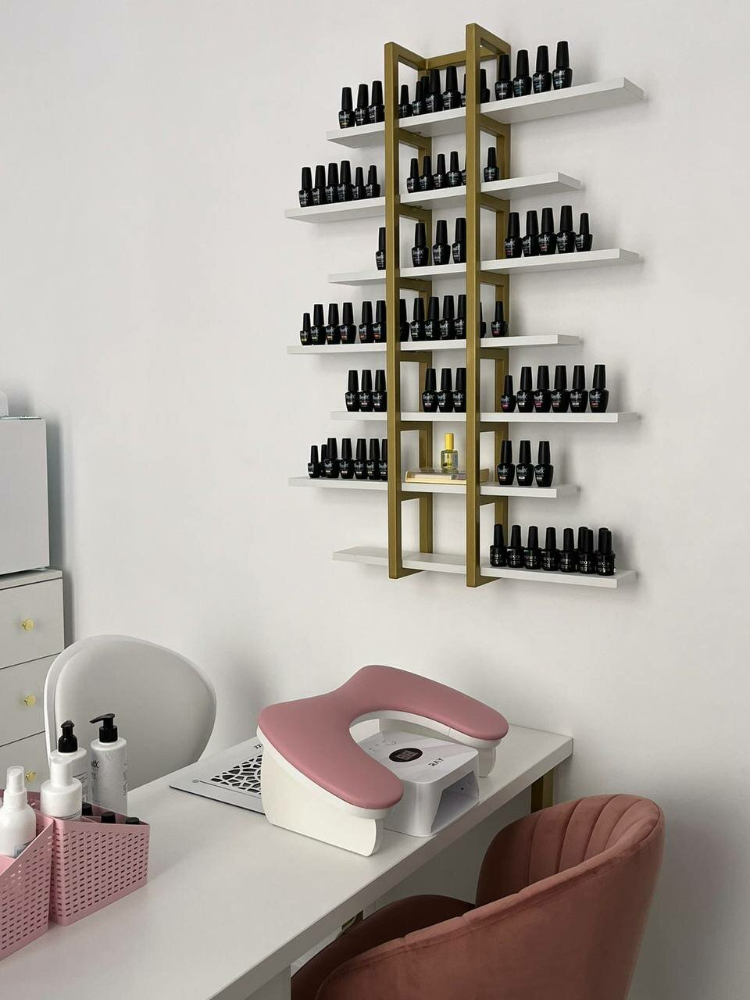
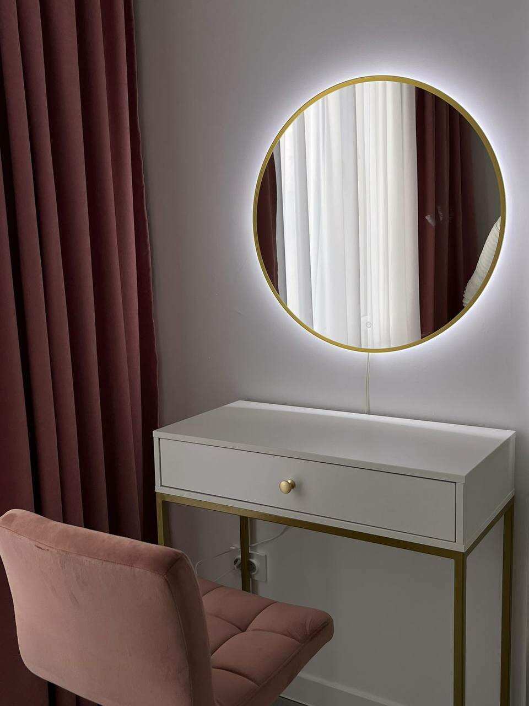

Уютный и красивый салон в самом центре.
01 / НАЧНЁМ С ВАШЕГО НАСТРОЕНИЯ
Сегодня я хочу
быть нежной.
Выберите своё ощущение.
А мы покажем, как оно выглядит на кончиках пальцев.
 РАБОТА МАСТЕРОВ ВИВА
РАБОТА МАСТЕРОВ ВИВАВАШЕ ВДОХНОВЕНИЕРозовый
Розовый
кварц
Полупрозрачный розовый и мягкий глянец. Для дней, когда хочется бережности к себе.
Хочу такой маникюр Обсудим идею в WhatsAppВаше настроение может меняться. И это прекрасно.
02 / СДЕЛАНО В ВИВА
Влюбиться
с первого жеста.
Наши работы — без лишних слов.
Сохраните ту, в которой узнаете себя.
Реальные работы из галереи студии на Яндекс Картах ↗ПОКАЗАНО 4 ИЗ 8
03 / МЕНЮ ЗАБОТЫ О СЕБЕ
Для рук.
Для ног.
Для вас.
Выберите свой ритуал.
Красивый результат начинается
с внимания к деталям.
РАБОТАЕМ СLUXIO · BEAUTIX · KANE
ПРИЯТНО ПОЗНАКОМИТЬСЯ
2 200₽предложение студии*Ваш первый «всё включено»
Снятие, маникюр, укрепление, гель-лак и SPA-уход.
Узнать условия предложения*Цены и предложение — из карточки ВИВА на Яндекс Картах. Актуальную стоимость и условия уточняйте при записи. Дизайн и длина могут влиять на цену.


Здесь можно выдохнуть.04 / МЕСТО, ГДЕ ВАМ РАДЫ
Чуть тише мир.
Чуть больше вы.
Заходите за маникюром.
Оставайтесь за ощущением.
Свет, мягкие оттенки и своё место у окна. ВИВА — маленькая пауза в большом дне, в самом сердце Адлера.
01
Красота в вашем ритмеПо предварительной записи,
каждый день с 09:00 до 21:00.
02
Продуманный уходМаникюр, педикюр, наращивание,
брови, ресницы и подология.
03
Маленькие удобстваWi-Fi, парковка и оплата картой.
Результат очень понравился. Спасибо большое!
06 / ДО ВСТРЕЧИ В ВИВА
Впишите себя
в свои планы.
Выберите удобное время.
Пусть это будет ваше маленькое «для себя».